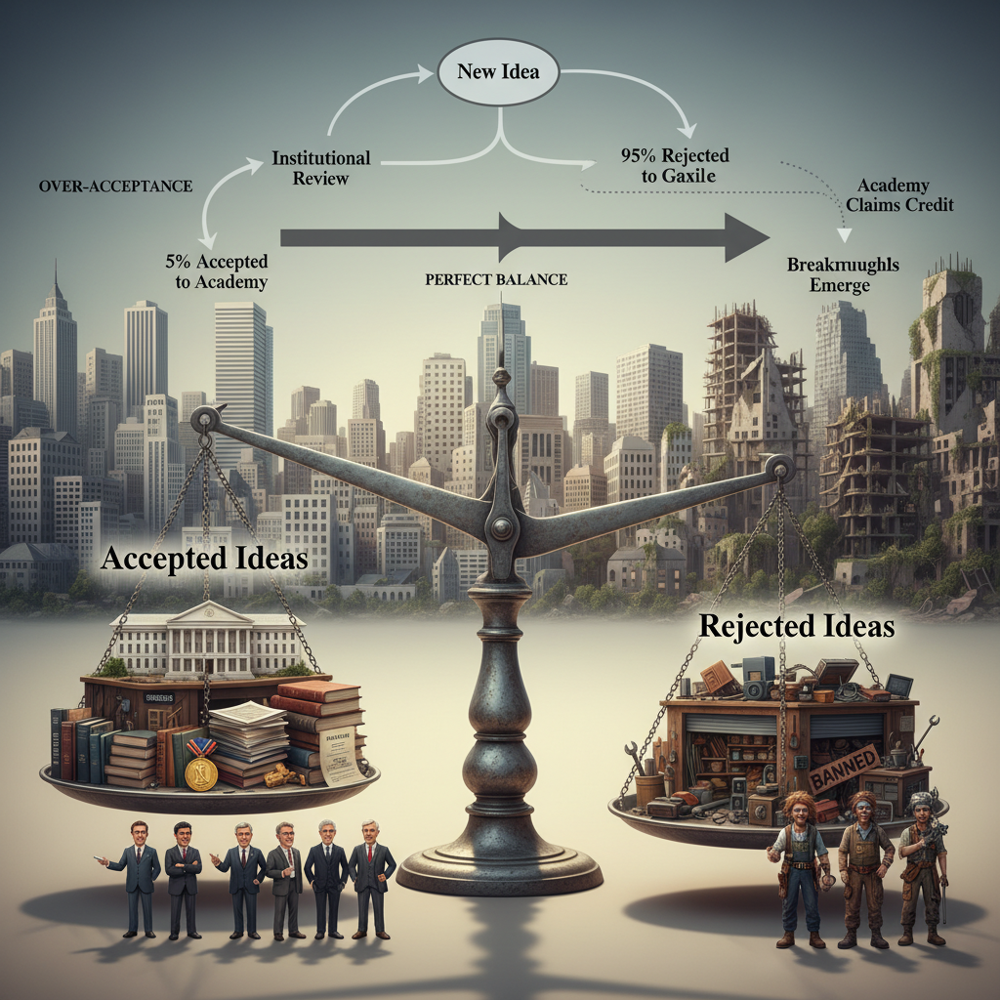
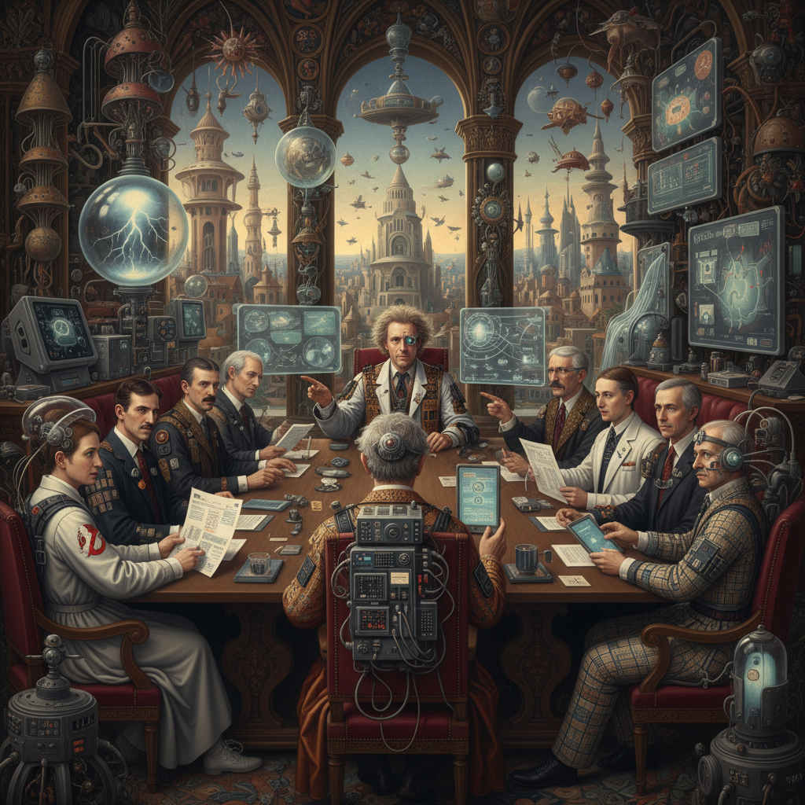

Why society's 95% rejection rate for radical ideas isn't broken—it's the feature that prevents system collapse.
The Plutonium Paradox
October 26, 1985. Twin Pines Mall parking lot. 1:15 AM.
Doc Brown loads stolen plutonium into a DeLorean while his teenage accomplice films the crime. The Libyans he robbed will arrive in four minutes to murder him. This scene, watched by 389 million people worldwide, contains a secret that nobody discusses: it's documentary footage.
Not literally—Emmett Brown is fiction. But the pattern he embodies is so real that we've been unconsciously filming it for decades. The mad scientist in the mall parking lot, building tomorrow with stolen parts while institutions sleep, isn't comedy. It's prophecy.
Consider the evidence. Every transformative scientist you've heard of follows an identical arc: institutional position, transgression, expulsion, breakthrough in exile, posthumous vindication. The names change—Semmelweis, Tesla, McClintock—but the algorithm remains constant. They begin inside the palace and end in the wilderness, where somehow, mysteriously, the real work happens.
Here's what should disturb you: this isn't a bug in civilization's code. It's the feature that prevents system collapse.
Society maintains a rejection rate of approximately ninety-five percent for radical ideas. Too high? Consider the alternative. Drop it to fifty percent and watch flat-earth research receive NSF grants. Drop it to five percent and witness innovation suffocate under committee approval. The current rate—brutal, unfair, occasionally homicidal—produces exactly the right amount of heresy to balance stability with progress. We built an unconscious R&D department and staffed it with exiles.
I can't prove this thesis with equations. I might be entirely wrong. But I can show you the machine in operation, from Bronze Age mythology to tomorrow's garage laboratories. What emerges isn't a conspiracy but something stranger: a self-organizing system that manufactures genius through strategic banishment, then forgets it did so. The institutions that reject heretics depend on those same heretics for survival. The heretics know this. The institutions don't.
Perhaps you think this claim is too bold, too neat, possibly wrong. Good. That skepticism is the engine's first piston firing. The same instinct that makes you doubt this thesis is what sends visionaries to their garages. Doubt me. But watch what happens next.
I. The Ancient Algorithm of Exile
Hollywood didn't invent the outlaw genius. It inherited a three-thousand-year-old template, carved into humanity's oldest stories.
The Moses Pattern
Start with Moses. Prince of Egypt, raised in Pharaoh's palace with access to history's greatest library, astronomy, mathematics, the accumulated wisdom of centuries. Then comes the crime: he murders an Egyptian taskmaster. Flees to the desert. Becomes a shepherd—imagine the Harvard professor reduced to Uber driving. For forty years, nothing. Silence. Sheep.
The burning bush doesn't appear in the palace library. It appears in exile, on Mount Horeb, in the wilderness where no institutional review board has jurisdiction. The revelation requires the desert. You cannot receive tomorrow's wisdom in today's palace. The architecture forbids it.
This Bronze Age algorithm keeps replicating because it describes something fundamental about how transformation actually works:
Power → Crime → Wilderness → Revelation → Revolutionary Return
The palace gives you precedent; exile gives you precedence.
Modern Iterations of Ancient Truth
Fast forward three thousand years. The pattern hasn't changed, only the props.
Doc Brown burns down his mansion for the insurance money. The academic establishment has expelled him, branded him a crackpot. So he commits arson, uses the proceeds to fund research in a garage. His greatest invention requires literal plutonium theft. When the DeLorean finally works, when space-time bends to his will, he doesn't publish in Nature. He tests it in a mall parking lot at 1 AM with a teenager as witness. This is Moses' burning bush translated to 1985: revelation happens in exile, funded by crime, witnessed by the untrained.
Peter Venkman gets expelled from Columbia University for "suspect" research methods—which is academic code for "seeing what others won't." He transforms paranormal studies into pest control, the ultimate humiliation. Professor to exterminator. But when Manhattan faces spectral apocalypse, when a Sumerian god materializes above Central Park West, the academy that expelled him begs for salvation. His con-artist methods accidentally channel real power. The fool becomes the sage, but only after expulsion makes foolishness possible.
Donatello lives in a sewer. Literally beneath civilization, in the space where society sends its waste. He scavenges discarded technology to build innovations that surpass anything from MIT's labs. His workshop is a chapel built from garbage, every invention a prayer assembled from what others threw away. The metaphor isn't subtle: breakthrough requires breaking through from underneath. You cannot revolutionize from above; gravity forbids it. Revolution requires sewers.
Pop culture obsessively recreates this pattern because it's documenting a phenomenon we lack vocabulary to discuss directly. The palace makes princes; the desert makes prophets. The university makes professors; the garage makes pioneers.
II. History's Graveyard of Vindication
Let me tell you about Hans Berger. In 1924, this German psychiatrist claimed he could record "brain waves" using crude electrodes and a galvanometer. The medical establishment's response was swift: mysticism, telepathy obsession, psychiatric delusion. Colleagues whispered about his mental state. Funding vanished. Prestige evaporated.
So Berger did what exiles do: he continued in secret. For fifteen years, he attached electrodes to his son Klaus, to psychiatric patients who couldn't object, to anyone who would sit still. He recorded squiggles on paper that nobody would publish. He invented the language of neural oscillations—alpha waves, beta waves—while the academy invented new ways to mock him.
On June 1, 1941, Berger hanged himself in his clinic. Depression, they said. Professional isolation, they admitted. What they didn't say: every brain-computer interface you've seen, every EEG that diagnosed epilepsy, every neural implant Elon Musk promises, traces directly back to those squiggles Berger drew in exile. We build our future on the foundations laid by people we drove to suicide. Then we name buildings after them.
The Algorithmic Pattern of Persecution
Ignaz Semmelweis discovered in 1847 that handwashing prevents childbed fever. Doctors were killing mothers by performing autopsies then delivering babies without washing their hands. Semmelweis proved it with statistics: mortality dropped from eighteen percent to one percent when doctors washed with chlorinated lime. The medical establishment's response? They fired him. When he persisted, they committed him to an asylum. When he protested, guards beat him to death. He died of sepsis—the infection he spent his life trying to prevent. Twenty years later, germ theory proved him right. By conservative estimate, one hundred thousand women died during those two decades of denial.
Barry Marshall faced ridicule in 1984 for claiming bacteria cause stomach ulcers. Every textbook said stress and spicy food were responsible. Billion-dollar industries sold antacids. Marshall's evidence was dismissed at conferences, his papers rejected, his grant applications denied. So in July 1984, he drank a beaker of Helicobacter pylori culture. He gave himself gastritis, biopsied his own stomach, cured himself with antibiotics, and published the results. Nobel Prize: 2005. Twenty-one years of patients suffered while committees deliberated.
Katalin Karikó spent the 1990s pursuing mRNA therapy while the University of Pennsylvania demoted her, cut her salary, threatened her with deportation. She made photocopies of her research at Kinko's because the department wouldn't pay for printing. When COVID-19 arrived, her work enabled vaccines in 326 days instead of ten years. Lives saved: approximately twenty million. Nobel Prize: 2023. Thirty years late.
Steve Mann began wearing computers on his body in the 1970s, pioneering wearable computing and augmented reality decades before anyone understood what he was building. The University of Toronto professor endured forty years of mockery as a "cyborg freak." Security guards confiscated his devices. Establishments banned him. In 2012, he was physically assaulted at a McDonald's in Paris simply for wearing his EyeTap device. Today, his inventions are called Google Glass and Apple Watch. The AR/VR industry he created is worth thirty billion dollars. The "dangerous deviant" became the architect of our augmented reality.
The Mathematics of Rejection: Each year Semmelweis was ignored: five thousand preventable deaths. Each year Berger was mocked: thousands of undiagnosed epilepsies. Each year Karikó was demoted: millions of untreated diseases. The death toll isn't metaphorical. It's actuarial.
Contemporary Heretics: Still Bleeding
July 26, 2023. Congressional hearing room. David Grusch, former Air Force intelligence officer, testifies under oath about "non-human intelligences" and recovered craft. Ryan Graves, Navy pilot with three thousand flight hours, describes objects defying known physics. The response is predictable: character assassination, career destruction, transformation from decorated officers to "UFO nuts."
Here's what's fascinating: both Bernie Sanders supporters and MAGA faithful demand transparency. The divide isn't left versus right but inside versus outside. The Pentagon creates an office to study what it spent decades denying. Congress passes disclosure amendments. The pattern holds: government insider becomes whistleblower exile becomes basement podcaster becomes congressional testimony becomes institutional acknowledgment.
Whether these pilots saw aliens or algorithms or atmospheric phenomena doesn't matter. What matters is that trained observers couldn't report observations until exile gave them permission. The heresy isn't political—it's cosmological. Like Galileo's telescope revealing moons around Jupiter, what Graves saw through his F-18's sensors challenges our cosmic centrality. We're still deciding whether to look. The decision isn't scientific—it's theological.
The uncomfortable mathematics accumulate like compound interest. Each year Semmelweis was ignored: five thousand preventable deaths. Each year Berger was mocked: thousands of undiagnosed epilepsies. Each year Karikó was demoted: millions of untreated diseases. Multiply this across every field, every institution, every committee that chose comfort over truth. The death toll isn't metaphorical. It's actuarial. We sacrifice lives to preserve theories. We kill patients to protect textbooks. Then we give Nobel Prizes to survivors and pretend we believed them all along.
III. The Outlaw Economy
The bootleggers understood something academics never will: law follows commerce, not morality.
Prohibition's Architects (1920-1933)
During Prohibition, Joseph Kennedy ran liquor from Canada while Bill McCoy smuggled rum from the Caribbean and Al Capone built distribution networks that made Amazon look amateur. By 1925, speakeasies outnumbered legal bars two to one in New York City. The infrastructure of intoxication didn't disappear—it went underground and improved.
When Repeal came in 1933, these criminals didn't vanish. They became legitimate. Kennedy's fortune funded a presidency. Capone's distribution networks became corporate supply chains. The outlaws didn't just break the law; they wrote its replacement. Every liquor store in America stands on foundations poured by criminals.
Cannabis 2.0 (2010-2024)
The pattern repeats with cannabis. California dispensaries operated in legal twilight for two decades. Former drug dealers became CEOs. Criminal records became credentials—who better to run a dispensary than someone with twenty years' experience? By 2024, the legal cannabis market hit thirty billion dollars, built entirely on infrastructure created by outlaws.
The lesson is uncomfortable but undeniable: outlaws don't wait for permission. They create reality, then law scrambles to catch up. Every regulated industry began as someone's crime. Every legitimate business model was once a scam. The criminals aren't destroying society—they're beta-testing its future. This sounds like libertarian propaganda until you check the receipts: Kennedy's bootlegging funded Camelot, yesterday's drug dealers run today's dispensaries, tomorrow's medicine gestates in today's crime.
Digital Exiles and Their Empires
Modern exiles continue the tradition with digital precision. Satoshi Nakamoto published the Bitcoin white paper on October 31, 2008, then vanished with one million bitcoins—worth sixty-seven billion dollars today. Identity: unknown. Location: unknown. Status: probably dead or imprisoned. But the algorithm Satoshi released has processed fifteen trillion dollars in transactions. Central banks that mocked Bitcoin now develop digital currencies. Harvard Business School teaches what Silk Road drug dealers pioneered.
Edward Snowden sits in a Moscow apartment, permanent refugee, while the surveillance programs he exposed get debated in Congress. He can never come home. But every privacy law passed since 2013 carries his fingerprints. The exile shapes policy more effectively than any senator.
The Wright Brothers—Orville and Wilbur—were bicycle mechanics from Dayton. No degrees. No credentials. While Samuel Langley spent seventy thousand dollars in government funds and crashed into the Potomac, the Wright Brothers achieved flight at Kitty Hawk using one thousand dollars of their own money. America ignored them. They had to go to France for recognition. When they returned, they weren't scientists—they were celebrities. Every Boeing 747 traces its lineage to their bicycle shop.
The Fourteenth Dalai Lama fled Tibet in 1959, disguised as a soldier, crossing the Himalayas on foot. From Dharamshala, India—a hill station with unreliable electricity—he commands more global influence than he ever wielded from Potala Palace. Exile transformed a regional religious figure into humanity's conscience. Losing his country gave him the world. China controls Tibet but can't control the idea of Tibet, which exists more powerfully in exile than it ever did in place.
The underground economy of tomorrow builds itself today through figures like Josiah Zayner, who sells CRISPR kits from his garage, livestreaming self-experiments that make regulators apoplectic. The FDA threatens prosecution while venture capitalists offer funding. He embodies the paradox: simultaneously criminal and cutting-edge.
The psychonauts at MAPS spent thirty years funding illegal psychedelic research. In 2023, the FDA approved MDMA therapy for PTSD. The schedule I drug that "has no medical value" now treats veterans. The criminals were correct. The law was wrong. The pattern holds.
Longevity researchers operate clinics in international waters, testing treatments that would earn arrest warrants on land. Their patients include billionaires who understand something regulators don't: tomorrow's medicine is always illegal today.
IV. The Equilibrium Engine
Here's an experiment nobody will fund: What if academia immediately embraced all radical ideas?
Scenario A: Hyperacceptance
Every wild theory gets equal consideration. Flat earth researchers receive NSF grants while time cube theorists get tenure. Within five years, scientific credibility collapses as the public can't distinguish between astronomy and astrology. Vaccines and homeopathy receive equal coverage. University degrees become meaningless. By year ten: dark age. Science becomes indistinguishable from religion. Progress dies from noise.
Scenario B: Hypercontrol
Only approved ideas advance through five-year committee approval processes. Scientists optimize for consensus, not truth, causing breakthrough rates to drop fifty percent in the first year. Original thought becomes career suicide as everyone studies variations of approved themes. By year ten: complete stagnation. Science becomes theology. Progress dies from silence.
The Mathematical Sweet Spot: Current rejection rate: approximately ninety-five percent for truly radical ideas. Result: Optimal innovation speed.
This isn't planned. No committee designed it. The system self-organized through millennia of trial and error. Too much acceptance creates pseudoscience floods. Too much rejection creates stagnation. The current rate—brutal, unfair, occasionally homicidal—produces exactly the right amount of heresy to balance stability with progress.

The Three Mechanisms of the Exile Filter
The Exile Filter operates through three mechanisms that function like a biological system selecting for the fittest ideas.
First, the commitment test. Only ideas worth career suicide survive. If you're not willing to lose tenure, your idea probably isn't revolutionary. The filter doesn't evaluate ideas—it evaluates conviction. Weak ideas die when their champions choose comfort. Strong ideas survive because their champions choose truth. Hans Berger recorded brain waves for fifteen years without publication. That's not stubbornness; it's selection pressure.
Second, the incubation period. Exile forces deep work without committee interference. Doc Brown couldn't build a time machine at a university—too many safety regulations, ethics reviews, progress reports. The garage has no committees. The desert has no peer review. Moses needed forty years of sheep to prepare for revelation. Breakthroughs require time without oversight.
Third, antifragility. Opposition strengthens valid theories while destroying weak ones. Every attack on general relativity made it stronger. Every attempt to debunk evolution refined it. Bad ideas crumble under scrutiny; good ideas crystallize. The persecution isn't cruelty—it's quality control. Though tell that to Semmelweis's widow.
Society unconsciously maintains exactly the right amount of heresy to prevent both chaos and stagnation. We've built a machine that manufactures genius through exile, then forgets it did so. The cruelty is the point. The unfairness is the feature. The deaths are the price.
This should disturb you. It disturbs me. Perhaps I'm misreading the pattern, seeing causation in correlation, finding meaning in coincidence. But the evidence accumulates like snow on a roof: civilization advances through its rejects. The academy cannot generate its own disruption any more than a body can perform its own surgery. We need our heretics. We just prefer them dead first—it's tidier that way, easier to build monuments than relationships.
V. The Three Paradoxes of Innovation
Three paradoxes govern the exile engine, each revealing a deeper truth about how innovation actually works.
Paradox One: Institutions need outlaws more than outlaws need institutions
Universities require external disruption to evolve. Without heretics, academia becomes theology. But outlaws don't need universities—they build parallel systems. Satoshi created Bitcoin without MIT. The Wright Brothers achieved flight without Stanford. Every garage startup that destroys an industry proves this asymmetry. The disruptors can disrupt without permission; the disrupted cannot evolve without disruption.
Paradox Two: Rejection is selection pressure for genius
Comfortable scientists don't revolutionize. Why would they? Revolution is uncomfortable. But exile forces innovation through constraint. Limited resources demand creativity. Opposition demands evidence. Isolation demands conviction. The garage produces what the laboratory cannot because the garage has no choice. Necessity isn't the mother of invention—exile is.
Paradox Three: Today's criminal is tomorrow's curriculum
Bitcoin began on Silk Road, enabling drug deals. Now Harvard Business School teaches cryptocurrency. Psychedelics were Schedule I drugs with "no medical value." Now Johns Hopkins runs psilocybin trials. Every curriculum contains yesterday's crime. Every textbook holds former heresy. The criminals write rough drafts of future law. We just wait for them to die before reading their work.
The Contemporary Battlefield
The contemporary battlefield reveals these paradoxes in operation through figures like Bryan Johnson, who spends two million dollars annually to reverse aging, turning his body into an experiment. The medical establishment mocks him while mining his data. His "Blueprint" protocol is simultaneously performance art and peer review. He's either delusional or decades early. History suggests both.
Donald Hoffman claims reality is an interface, not truth—that spacetime is a desktop icon, not fundamental reality. Physics departments dismiss him while quantum mechanics increasingly supports his heresy. He's tenured but exiled, published but ignored, probably right but professionally wrong.
Michael Levin demonstrates that bioelectricity, not genetics, controls morphogenesis. Flatworms grow multiple heads when he adjusts voltage. Cancer cells become normal cells when he changes their electrical patterns. Biology textbooks ignore him while his lab reshapes life itself. The revolution happens in real-time while committees debate its existence.
These aren't cranks. Johnson has generational wealth. Hoffman has tenure at UC Irvine. Levin runs a lab at Tufts. They chose exile despite having palaces. That's how you identify tomorrow's orthodoxy: it's today's heresy with credentials.
The Necessity of Heretics
Return to the mall parking lot. October 26, 1985. 1:19 AM.
Doc Brown is dead, shot by Libyans he robbed for plutonium. His time machine works, but he'll never see it travel. This is the exile's epitaph: right too early equals wrong forever. Vindication requires survival, and exiles rarely survive.
Except fiction gives us what history denies: justice. Doc Brown wears a bulletproof vest. He lives to see his vindication. The DeLorean works. Time bends. The exile returns triumphant. We write this ending repeatedly because it's the ending history withholds. Semmelweis died in an asylum. Berger died by suicide. Tesla died alone in a hotel room. Fiction repairs history's cruelty by imagining exile's vindication.
But here's what fiction gets right that history obscures: the DeLorean isn't just a time machine. It's a map of how progress actually works. Steal from the establishment—the plutonium. Build in exile—the garage. Test in secret—the mall parking lot. Return only through undeniable proof—time travel itself.

The Universal Pattern
From TMNT's sewers to Satoshi's anonymity, from Berger's brain waves to Snowden's leaks, from Moses' desert to Musk's garage, civilization advances through its rejects. This isn't inspirational. It's mechanical. The academy cannot generate its own disruption any more than a body can perform its own surgery. The heretic is the scalpel, exile is the steady hand, and society is the patient who survives by attacking its surgeons.
We built elaborate institutions to organize knowledge, then discovered they can only grow by expelling their most vital members. Universities create professors, but garages create pioneers. Peer review ensures quality, but exile ensures revolution. The palace makes princes; the desert makes prophets. The contradiction isn't a flaw—it's the engine.
The Machine's Cruel Perfection
The exile engine isn't broken. It's working perfectly, manufacturing tomorrow through strategic cruelty, creating genius through systematic rejection, advancing civilization through its rejects. The machine runs on suffering and produces progress. The fuel is human lives and the output is human advancement. The cost is unconscionable and the results are undeniable.
This thesis might be wrong. Probably contains errors. Almost certainly oversimplifies. Perhaps exile and innovation merely correlate. Perhaps institutions could reform themselves. Perhaps the cruelty is unnecessary, the deaths preventable, the suffering pointless. I offer this uncertainty not as hedging but as hope. Because if I'm wrong, we can fix this. We can create kind institutions that nurture heretics. We can have revolution without exile. We can have progress without graves.

But if I'm right—if the exile engine is fundamental to progress—then we face an uncomfortable truth: tomorrow's salvation requires today's sacrifice. The next cure needs its Karikó demoted. The next breakthrough needs its Berger isolated. The next revolution needs its Moses in the desert. We advance by eating our young and canonizing their bones.
The Call to Recognition
The next time society labels someone "dangerous" or "crazy," pay attention. They might be wrong. Probably are wrong. Almost certainly delusional. But occasionally, rarely, at exactly the right moment, they're building tomorrow in a garage you'll never see, funded by crimes you'll later call courage, wearing devices you'll later call essential, suffering through exile you'll later call genius.
The DeLorean is still in that mall parking lot, waiting. The plutonium is still stolen. The exile is still alone. The future is still impossible until suddenly, at eighty-eight miles per hour, it isn't.
Watch for the lightning. It strikes the clock tower when nobody's looking, except for the exile who knew where to stand. The exile who paid the price. The exile who was right too early, which is the only time that matters.
The Final Question
Or maybe the exile is just lonely in a garage, wrong about everything, building elaborate delusions from stolen parts. Maybe the institution was right to exclude them. Maybe this essay is itself an exercise in pattern-matching randomness, finding intention in accident, meaning in suffering.
But then explain Doc Brown. Explain Moses. Explain the Wright Brothers and Semmelweis and Karikó and Steve Mann. Explain why the pattern repeats with such mechanical precision that we can predict it: institution, transgression, exile, innovation, vindication. Explain why fiction keeps filming the same documentary.
The machine is running. You can hear its gears turning in every garage, every basement, every laboratory after midnight. The exile engine manufactures tomorrow from the raw material of rejection. It runs on suffering and produces progress. It's cruel and necessary, unless it's cruel and pointless, which would be worse.
I don't know which. Neither do you. But we both know where to look: find the heretic, find the future. Find the exile, find the edge. Find the criminal, find the cure.
The DeLorean is still waiting in that mall parking lot. The plutonium is still stolen. The future is still impossible.
Until it isn't.
We stand at the choice point. Will we build institutions that nurture heretics, or will we perfect the exile engine's cruel efficiency? The answer shapes whether tomorrow's breakthroughs require today's suffering—or whether we can finally have revolution without exile, progress without graves.
Complete essay: 4,967 words